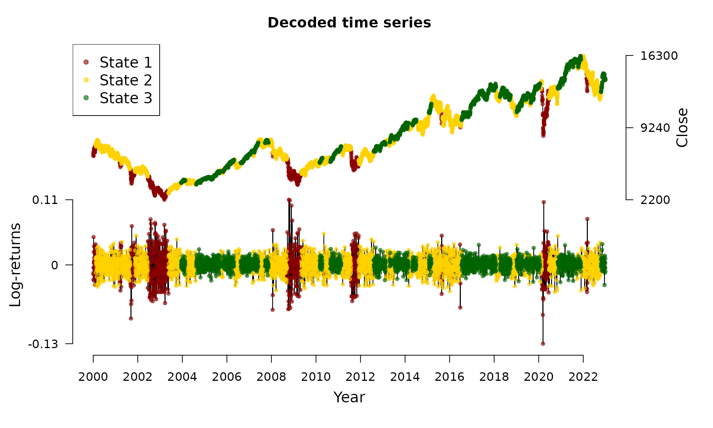

State decoding and prediction
Source:vignettes/v05_state_decoding_and_prediction.Rmd
v05_state_decoding_and_prediction.RmdThis vignette1 introduces the Viterbi algorithm for state decoding. The decoded state sequence in combination with the estimated model parameters can be used for forecasting.
State decoding using the Viterbi algorithm
For financial markets, it is of special interest to infer the underlying (hidden) states in order to gain insight about the actual market situation. Decoding a full time series \(S_1, \ldots, S_T\) is called global decoding. Hereby, we aim to find the most likely trajectory of hidden states under the estimated model. Global decoding can be accomplished by using the so-called Viterbi algorithm which is a recursive scheme enabling to find the global maximum without being confronted with huge computational costs. To this end, we follow Zucchini, MacDonald, and Langrock (2016) and define \[\zeta_{1i} = Pr(S_1 = i, X_1 = x_1) = \delta_i p_i(x_1)\] for \(i = 1, \ldots, N\) and for the following \(t = 2, \ldots, T\) \[\zeta_{ti} = \operatorname*{max}_{s_1, \ldots, s_{t-1}} Pr(S_{t-1} = s_{t-1}, S_t = i, X_t = x_t).\] Then, the trajectory of most likely states \(i_1, \ldots, i_T\) can be calculated recursively from \[i_T = \operatorname*{argmax}_{i = 1, \ldots, N} \zeta_{Ti}\] and for the following \(t = T-1, \ldots, 1\) from \[i_t = \operatorname*{argmax}_{i = 1, \ldots, N} (\zeta_{ti} \gamma_{i, i_{t+1}}).\] Transferring the state decoding to HHMMs is straightforward: at first the coarse-scale state process must be decoded. Afterwards, by using this information the fine-scale state process can be decoded, see Adam et al. (2019).
The decode_states() function
We revisit the DAX model of the vignette on model estimation:
data(dax_model_3t)The underlying states can be decoded via the
decode_states() function:
dax_model_3t <- decode_states(dax_model_3t)
#> Decoded statesWe now can visualize the decoded time series:
plot(dax_model_3t)
Mind that the model is invariant to permutations of the state labels.
Therefore, fHMM provides the option to switch labels
after decoding via the reorder_states() function, for
example:
dax_model_3t <- reorder_states(dax_model_3t, 3:1)Prediction
Having decoded the underlying states, it is possible to compute the state probabilities of next observations. Based on these probabilities and in combination with the estimated state-dependent distributions, next observations can be predicted, compare Zucchini, MacDonald, and Langrock (2016):
predict(dax_model_3t, ahead = 10)
#> state_1 state_2 state_3 lb estimate ub
#> 1 0.00000 0.02489 0.97511 -0.01072 0.00123 0.01318
#> 2 0.00013 0.04854 0.95133 -0.01100 0.00119 0.01339
#> 3 0.00039 0.07099 0.92862 -0.01127 0.00116 0.01359
#> 4 0.00075 0.09232 0.90693 -0.01154 0.00112 0.01378
#> 5 0.00123 0.11257 0.88621 -0.01179 0.00109 0.01397
#> 6 0.00180 0.13180 0.86640 -0.01204 0.00106 0.01416
#> 7 0.00246 0.15006 0.84748 -0.01228 0.00103 0.01433
#> 8 0.00321 0.16740 0.82939 -0.01251 0.00100 0.01451
#> 9 0.00403 0.18387 0.81211 -0.01274 0.00097 0.01467
#> 10 0.00492 0.19950 0.79558 -0.01296 0.00094 0.01484